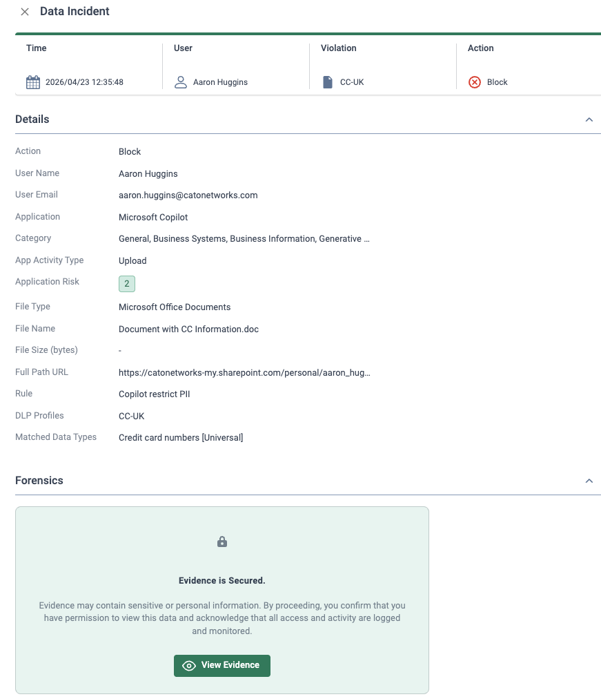
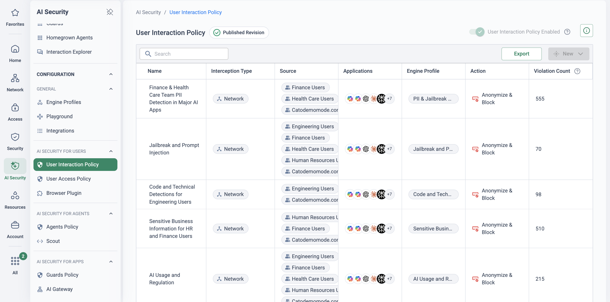
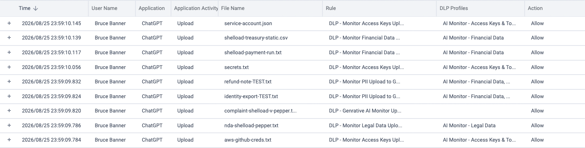
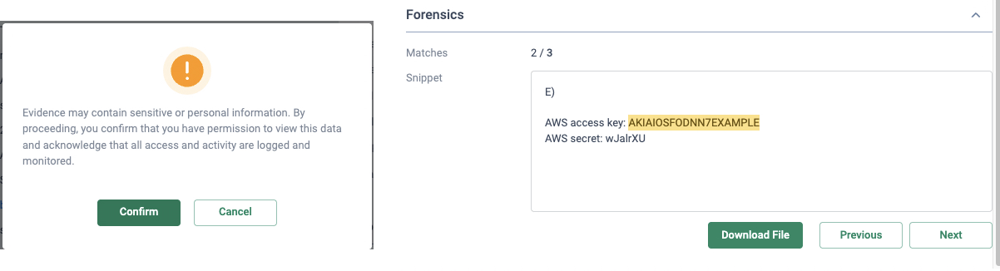

Why this matters
Employees adopted GenAI faster than any tool in enterprise history — and mostly without asking. Source code goes into chatbots to be debugged, customer records go in to be summarised, contracts go in to be redrafted. Every prompt is potentially an upload of sensitive data to a third party the organisation has never assessed.
The objective is not to ban GenAI — the productivity upside is real and the business will route around a ban. The objective is safe enablement: let people use AI, see exactly how they use it, and control what leaves with each prompt. That takes an ongoing capability, not a one-off audit: discover the AI estate, understand usage and risk, govern interactions at prompt level, and keep the evidence.
Cato packages this as AI Security for End Users — a per-user licence, separate from the AI Security for Apps licence that covers an organisation's own AI applications and agents. This page covers the end-user side.
Run the assessment first. The no-cost, four-week GenAI Visibility Assessment produces the baseline and the board-ready report — this use case is the ongoing capability the customer keeps running afterwards.
Why URL-filter-era controls fail for GenAI
Most organisations' first response to GenAI risk was the tool they already had: the web filter. Categorise the domain, block the category, declare the problem solved. It doesn't survive contact with how GenAI is actually used.
The URL-filter playbook
- Classify the destination domain, then allow or block it outright
- Risk judged once, per category — never per interaction
- Sees a connection to an AI service, not what was pasted into it
- New tools take time to classify — AI apps appear weekly
- All-or-nothing: the only "safe" setting is a productivity-killing ban
The GenAI reality
- AI is embedded inside sanctioned SaaS you cannot block wholesale
- The risk lives in the prompt — what goes in, not where it goes
- Blocked users switch to personal accounts and devices — usage goes dark
- The same app can be fine for one prompt and a data breach for the next
- Auditors and AI governance frameworks now ask for proof of control
“Which GenAI tools were used in your organisation last week, by whom — and what was pasted into them? If you can answer the first half but not the second, you have visibility of domains, not of data.”
Discover → understand → govern → prove
1 · Discover — find every AI app in use
AI Usage Discovery builds the inventory through three complementary methods, so coverage isn't gated on deployment work: analysis of Internet Firewall events the Cato Cloud already processes (no additional setup), ingestion of security product logs from third-party proxies and SASE platforms (extends visibility without touching end-user devices), and the Cato AI Security Browser Plugin for the deepest, browser-level view.
On top of that inventory, Shadow AI Discovery classifies traffic against AI application signatures, domains and behavioural patterns — catching both standalone AI tools and AI features embedded inside everyday SaaS, and evaluating the risk posture of what it finds. It is deliberately passive: it does not block traffic by default and does not inspect prompt content. The dedicated Shadow AI page in the Cato Management Application answers three questions: which AI applications are in use, how widely each is used, and which represent higher risk and need closer review.
2 · Understand — dashboards and the AI Users page
The AI Security Overview dashboard turns discovery into a management view: total AI apps, AI users, AI interactions and adoption rate up top; an AI Violation Rate widget as the quick risk-posture indicator; violation breakdown by policy rule; latest applications discovered (the shadow-AI early-warning feed); topic popularity; and top interaction flows from application to outcome. The AI Users page makes it personal — sort by policy violations, compare departments, then drill into one user to see their interactions and violations over the period, the split of safe prompts versus violations, the applications they use and their adoption over time.
3 · Govern — the User Interaction Policy
The User Interaction Policy is the control point: it inspects AI chat prompts in real time as they cross a Cato PoP and enforces a decision per interaction. A rule combines a source (users, groups or any), the AI applications in scope, an engine profile (the content profile that evaluates the prompt), an action, and an optional notification template to tell the user what happened and why. Four actions cover the whole spectrum: Monitor (prompt proceeds, interaction logged), Anonymize and Monitor (sensitive values masked, prompt proceeds), Anonymize and Block (anonymised where the detector supports it, otherwise blocked) and Block (prompt rejected — nothing reaches the AI vendor).
Where inline steering can't see — managed devices outside Cato coverage, such as a contractor estate on another vendor's SASE — the AI Security Browser Plugin (Chrome, Edge and other Chromium browsers, deployable via Intune) intercepts supported AI apps in the browser itself and enforces the same outcomes: block, anonymise or engage the user, modifying the prompt and masking content before it ever reaches the LLM. And beneath the interaction policy sits the recommended DLP configuration for AI apps: Cato-recommended content profiles for PII, financial data, access keys & tokens and legal data, applied in DLP rules against the Generative AI Tools application category as the file-and-upload backstop.
![ChatGPT conversation where the submitted prompt reads 'Redraft this notice for [NAME_1], DOB 01/01/1988, email [EMAIL_1], account [BANK_ACCOUNT_NUMBER_1]' — the name, email address and bank account number replaced by anonymisation tokens before reaching the model, with ChatGPT replying normally](../assets/img/genai-anonymised-prompt.png)
4 · Prove — evidence, not assertions
Every monitored, anonymised and blocked interaction is logged and attributed — user, application, rule, matched profile. The Overview dashboard shows violation rate and breakdown by rule; the AI Users page shows who needs coaching; and the data can be exported for compliance auditing. When the AI governance question arrives from the board or an auditor, the answer is a report, not a shrug.
Discovery with zero deployment
Internet Firewall events the Cato Cloud already processes reveal AI usage on day one — extend with third-party logs and the browser plugin only where more depth is needed.
Prompt-level decisions
The User Interaction Policy inspects each AI chat prompt in real time and acts per interaction — not a domain-level yes/no set once per category.
Anonymise, don't just block
Sensitive values are masked and the prompt still goes through — users keep the productivity, the data stays home, and nobody is pushed to a personal account.
Coverage beyond the network
The Chrome/Edge browser plugin enforces the same block, anonymise and engage outcomes on managed devices outside Cato coverage — such as contractor estates.
From monitor to block — without breaking the business
The teams that succeed with GenAI governance don't start with block. They start with monitor, let the data teach them what's real, and tighten action by action — so every restriction lands on evidence rather than fear, and users learn the policy as it arrives.
| Stage | Policy action | What the user experiences | Move on when… |
|---|---|---|---|
| 1 · Baseline | Monitor — User Interaction Policy rules and the recommended DLP rules, all in monitor mode | Nothing changes; every AI interaction is logged | You know the real AI estate and the top data-risk patterns |
| 2 · Coach | Monitor + notification templates; plugin engages users in the browser | In-the-moment notice explaining the policy as they work | Violation rate falls as behaviour visibly shifts |
| 3 · Redact | Anonymize and Monitor on sensitive data classes | Sensitive values masked; the prompt is still answered | Redaction reliably covers the data types that matter |
| 4 · Enforce | Anonymize and Block, or Block, on the highest-risk apps and data | Prompt rejected — nothing reaches the AI vendor — with a clear notification | Reserved for tools and data classes that fail review |
The DLP backstop follows the same arc. Cato's recommended configuration for AI apps defines four content profiles — PII (person identifiers, credit card and licence numbers), financial data (bank and card accounts, routing and SWIFT codes), access keys & tokens (AWS, GCP, GitHub and GitLab credentials) and legal data (ML classifiers for agreements, patents and court documents) — each applied in a rule against the Generative AI Tools application category, with monitor or block set to match the stage you've reached. Accounts created after 25 March 2025 receive the pre-defined recommended rules automatically; earlier accounts add them manually.
TLS Inspection must be enabled at the account level for the User Interaction Policy to inspect AI traffic — and its rules take precedence over TLS inspection bypass rules. API-based integrations support monitoring only.

How to run the demo
For a prospect with no current visibility, the GenAI Visibility Assessment is the opener — a no-cost, four-week engagement that builds their baseline. This demo shows the ongoing capability that baseline grows into. Ask what their current AI policy actually is; most answers are "we blocked ChatGPT" — which sets up the whole story.
-
Open on the numbers
AI Security → Monitoring → Overview
Walk the summary tiles — total AI apps, AI users, AI interactions, adoption rate. The AI apps count is usually multiples of what the customer expects, and adoption rate shows this is mainstream behaviour, not a fringe habit. Point at the AI Violation Rate widget as the one-number risk posture.
-
Walk the shadow AI inventory
From the Latest Application Discovered widget, follow View Shadow AI Inventory to the Shadow AI page: which AI applications are in use, how widely (users and interactions), and which are higher-risk. Stress how it got there — network-level discovery from traffic Cato already processes: nothing deployed, nothing blocked by default, prompt content untouched.
-
Follow one user
On the AI Users page, sort by policy violations and compare departments. Drill into one user — call her "Priya": her interactions and violations for the period, the safe-versus-violation split, the applications she uses and her adoption over time. Pivot to AI Interactions filtered to her for prompt-level context. "This is the conversation you can now have with a department head — specific, evidenced, not hypothetical."
-
Build a User Interaction Policy rule
AI Security → User Interaction Policy
Show the policy toggle, then walk a rule end to end: source users or groups, the AI applications in scope, the engine profile that evaluates the prompt, and the action — Monitor, Anonymize and Monitor, Anonymize and Block, Block — plus a notification template so the user learns the policy in the moment. Note the prerequisite: TLS Inspection enabled at account level.
-
Show the DLP backstop
Security → DLP Configuration
Show the Cato-recommended profiles — PII, financial data, access keys & tokens, legal — in rules against the Generative AI Tools application category. One policy engine covers pastes, prompts and file uploads to AI apps alongside the rest of the data protection estate.
-
Cover the gap with the browser plugin
For managed devices whose traffic never crosses a Cato PoP — a contractor estate on a third-party SASE, for example — the AI Security Browser Plugin (Chrome, Edge and Chromium browsers, deployable via Intune) enforces the same outcomes in the browser itself: block, anonymise or engage the user, masking content before the prompt reaches the LLM.
-
Close on evidence
Monitor → Events
Filter to AI-related events: every monitored, anonymised and blocked interaction, fully attributed and exportable for compliance auditing. "You started this meeting unable to name the AI apps in use. You're ending it with a per-prompt audit trail."
How to prove it in the customer's tenant
This is the enforcement pilot — the engagement that follows a discovery baseline. The four-week GenAI Visibility Assessment ends with an inventory, a violation rate and a report; this PoV proves the customer can act on it: one pilot group taken up the User Interaction Policy's action ladder step by evidenced step, one off-net device cohort covered by the browser plugin, and the DLP backstop producing a match report — all of it exported as the governance evidence pack. Agree the criteria below before configuring anything; the frame for that conversation is Running a Cato PoV.
| Success criterion | What is demonstrated | Evidence artefact | Where it lives |
|---|---|---|---|
| The action ladder, walked | One pilot group moves Monitor → Anonymize and Monitor → one agreed Block — each step held long enough to produce events before the next. | Dated events per rung + the violation breakdown by rule, week over week | AI Security → User Interaction Policy Monitor → Events |
| Anonymise proven on a live prompt | A seeded prompt with sensitive values is masked in-flight and still answered — the user keeps working, the data stays home. | User-side screenshot of the tokenised prompt (the Govern-section figure above is the shape) + the matching event | Monitor → Events |
| Plugin proven off Cato steering | One cohort of managed Chromium-browser devices whose traffic never crosses a Cato PoP gets the same outcomes via the browser plugin, pushed by Intune. | Plugin-attributed interactions in the inventory and events for the cohort's users | AI Security → Monitoring → Discovery |
| DLP backstop with a match report | The recommended DLP configuration for AI apps runs in monitor against the Generative AI Tools category; the match report is reviewed with the data owners. | Events export annotated true/false positive, per recommended rule | Monitor → Events Security → DLP Configuration |
| Users educated, not just policed | Notification templates fire at the moment of use — engage and notify — and the pilot group's violation rate visibly falls before anything is blocked. | Notification screenshot + the AI Violation Rate trend for the pilot group | AI Security → Monitoring → Overview |
| Evidence pack delivered | Dashboards plus an events export the governance owner can file — the per-prompt audit trail promised at the workshop. | Overview and AI Users captures, dated; events CSV export | AI Security → Monitoring → Overview Monitor → Events |
- Licence: AI Security for End Users is a separate per-user licence — distinct from AI Security for Apps, which covers the organisation's own AI applications and agents. Confirm the trial covers the pilot group and the plugin cohort before the workshop.
- TLS inspection enabled at account level — the User Interaction Policy cannot inspect AI traffic without it. Stage it on the pilot group per the TLS Inspection: Staged Rollout Playbook, with scope approved by whoever owns privacy.
- Identity integration syncing the pilot group — the ladder's evidence is per-user by design; unattributed events persuade nobody.
- The baseline exists: assessment findings (or at least two weeks of monitor-mode discovery) naming the apps, users and data patterns the pilot will act on. Enforcement follows evidence — never leads it.
- Prompt storage and privacy signed off, with a restricted RBAC role for who may read captured prompts — agreed before the first prompt is stored, not after.
- For the plugin cohort: Intune (or the customer's MDM) access to the cohort's devices, and — where those devices sit behind a third-party SASE such as Zscaler — the
catonetworks.comTLD allowlisted so the plugin can reach the Cato service.
Configuration walkthrough
-
Fix the ladder at the workshop
From the baseline, agree three things in writing: the pilot group (one department, say Finance, plus the off-net cohort), the data classes that matter (from the assessment's violation breakdown), and the calendar for the ladder — which week each action starts and what evidence gates the next rung. The one agreed Block is named now, not improvised in week four.
-
Week 1 — Monitor: the User Interaction Policy rule
AI Security → User Interaction Policy
Create the pilot rule: source = the pilot group, the AI applications in scope (or Any supported application — the wide net is the point in week one), the engine profile that evaluates the prompt, action Monitor. The prompt is sent to the AI vendor and the interaction is logged — nothing changes for users, and every prompt now lands as an event (Working with the User Interaction Policy). Note the rules take precedence over TLS inspection bypass rules — but the traffic still has to reach a PoP, which is exactly why the off-net cohort gets the plugin instead.

The published User Interaction Policy rulebase: each rule pairs an IdP source group and app scope with an engine profile and an action — here Anonymize & Block — with violation counts accruing per rule. (The notification template is set inside the rule editor.) -
Week 1 — the DLP backstop, in monitor
Security → DLP Configuration
Apply Cato's recommended DLP configuration for AI apps: four content profiles — PII, financial data, access keys & tokens, and legal data (ML classifiers) — each in a monitor rule against the Generative AI Tools application category (Recommended DLP Configuration to Monitor AI Apps). Accounts created after 25 March 2025 have the recommended rules pre-defined; earlier accounts add them manually. This is the file-and-upload backstop beneath the prompt layer — leave every rule in monitor for the whole PoV unless the match report argues otherwise.

The match report the data owners actually review (lab tenant, fictional identities and synthetic test files): nine uploads to ChatGPT, each attributed to a user, a file, a rule and a profile — eight matching the four recommended rules, one the tenant's pre-existing GenAI monitor rule — and every action Allow. Monitor mode is the whole point in week one; the grid tells you which data classes travel to AI apps before anyone argues about blocking them. Each row opens into the incident, and the incident opens into the evidence — the snippet that actually matched, with the matched value highlighted and a match counter for the rest of the file. Access to it is gated and logged, which is the answer to the reasonable objection that a match report is itself a data-exposure risk.

Opening the forensics on an access-key match: the viewer must first confirm the access is logged and monitored (left), and the snippet then shows the matched value in context with a 2-of-3 match counter (right). The key shown is AWS's own documented example value in a synthetic test file. -
Week 1 — deploy the plugin to the off-net cohort
Push the AI Security Browser Plugin via Intune to the cohort's managed devices — Chrome, Edge and other Chromium-based browsers are supported (What is the AI Security Browser Plugin). The plugin intercepts supported AI applications in the browser itself and enforces block, anonymise or engage-user outcomes, masking content before the prompt reaches the LLM — which is what makes a contractor estate on another vendor's SASE provable at all. Verify one cohort device end to end on day one: plugin installed, reaching the Cato service, its interactions visible in the inventory.
-
Week 2 — Anonymize and Monitor, with the user told why
AI Security → User Interaction Policy
With a week of monitor events reviewed, move the pilot rule to Anonymize and Monitor and attach a notification template. Have a pilot user — Priya — seed a prompt containing fictional test values for the agreed data classes: the sensitive values are masked in-flight, the prompt is still answered, and the notification explains what happened. The Govern-section figure above shows exactly what her screen looks like. Screenshot it from the user's side and pair it with the event — that pairing is the single most persuasive artefact this PoV produces.
Be precise about the boundary: only detectors that support anonymisation are masked. In the figure above the name, email address and bank account number are tokenised while the date of birth passes through untouched — it is not in the detector set. Test the customer's own data classes in monitor before promising masking for them; where a class must never leave and its detector cannot anonymise, Anonymize and Block is the honest setting — masked where supported, blocked otherwise.
-
Week 3 — the engage moment, on the access layer
AI Security → User Access Policy
Education is a policy action, not a memo. On the access layer — evaluated before Interaction Policies — put an Engage User rule on the personal tiers of otherwise-sanctioned tools, and a redirect or block on the apps the baseline rated high risk. Users see the policy at the moment of use, with a notification template written in the customer's own words. Watch the pilot group's violation rate on the Overview dashboard: the criterion is that it falls before anything is blocked.

The engage/notify rung as a published rulebase: personal chatbot tiers engage the user, high- and critical-risk apps redirect to sanctioned alternatives, one named service blocks — each rule with its notification template and a detection count showing the education actually landing. This is the week-3 evidence that behaviour shifted before enforcement arrived. -
Week 4 — the one agreed Block
AI Security → User Interaction Policy Monitor → Events
Promote the single case named at the workshop — typically the highest-risk app or data class the monitor weeks kept surfacing — to Block: the prompt is rejected and nothing is sent to the AI vendor, with the notification template saying so plainly. Seed the test with a pilot user (Marcus, fictional values), capture the blocked event and the user-side notice, and stop there. One block, evidenced, is worth more than ten promised.
-
Assemble the evidence pack
AI Security → Monitoring → Overview Monitor → Events
For the wrap-up: dated captures of the Overview dashboard (violation rate trend across the four weeks, breakdown by rule) and the AI Users page for the pilot group; the DLP match report with the data owners' true/false-positive annotations; the plugin cohort's inventory view; and the events export — every monitored, anonymised, engaged and blocked interaction, attributed and exportable for compliance auditing. Read it against the criteria table, row by row, in the decision meeting booked at the workshop.
Troubleshooting — when the evidence doesn't land
Prompts not being evaluated
Almost always TLS inspection scope: the policy needs TLSi enabled at account level, and the pilot user's traffic must actually cross a PoP. Interaction rules take precedence over TLSi bypass rules — but a device that never reaches Cato needs the plugin path, not the inline one.
Plugin misbehaving alongside other extensions
Browser extensions that rewrite page content — ad blockers, other security or DLP plugins — can interfere with prompt interception. Test the cohort's standard extension set on one device first, and check the plugin can reach the Cato service (allowlist the catonetworks.com TLD in any third-party SASE in the path).
Anonymise left a value unmasked
Working as documented, not broken: only detectors that support anonymisation mask values — anything outside the detector set passes through (the DOB in the figure above is the canonical example). Verify each promised data class in monitor, and use Anonymize and Block where an unmasked leak is unacceptable.
Events show IPs, not names
Identity sync lag or an unsynced pilot user. Confirm the IdP integration is populating the pilot group before the first weekly review — the ladder's whole story is per-user.
DLP match report empty or noisy
Empty: check TLSi covers the pilot group and the rules target the Generative AI Tools category. Noisy: tune thresholds with the data owners on the annotated export — and give monitor mode enough traffic time; a day-three report convinces no one.
API-sourced usage won't enforce
By design: with the AI Security API Integration module, the User Interaction Policy supports monitoring actions only. Enforcement evidence must come from the inline path or the browser plugin — position API-sourced visibility as discovery, not control.
Gotchas & exit
- Licence boundary: AI Security for End Users and AI Security for Apps are separate per-user licences. Everything in this PoV is End Users evidence; agents and homegrown apps are a different licence and a different engagement — keep the wrap-up honest about which licence bought which slide.
- Enforcement follows evidence, never leads it: if a stakeholder pushes to block in week one, the answer is the assessment's own lesson — monitor first, or the pilot proves nothing except that blocking is possible.
- Anonymisation has a documented edge: the detector set is finite. Never promise masking for a data class you have not seen masked in this tenant, in monitor, on seeded test data.
- Export as you go: take dated captures and event exports weekly rather than reconstructing at the end — retention windows are licence-dependent, and the wrap-up should read a register, not memories.
- Clean exit: return Interaction and Access Policy pilot rules to monitor (or disable them), remove the plugin from the cohort via Intune, and hand over the evidence pack. The recommended DLP monitor rules are worth leaving in place — they are the start of the production policy, and the customer will ask to keep the dashboards.